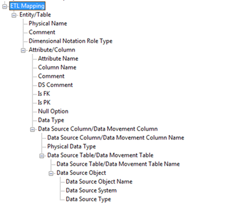
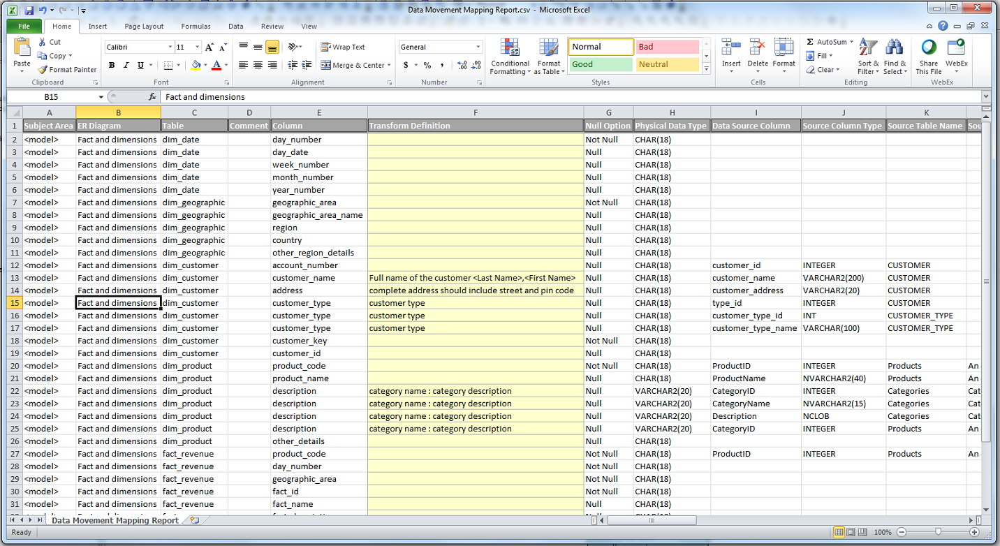

Report on Data Sources, Target Columns, and Transformations
This report includes the list of data sources, target columns, and the corresponding transformation details.
To generate this report, you must have a model that documents data movement sources and has the column level mappings defined.
Follow these steps:
- Open erwin Data Modeler and open a model in which data movement sources and column level mappings are defined.
- Click Tools, Report Designer.
- Click Create New Report. The erwin Report Editor dialog opens.
- Enter the title of the report as ETL Mapping.
- Enter a name for the report and select the Report Type as Logical/Physical.
- Select the Report Subject as Entity/Table.
- In the Select Report Fields pane, expand Entity, Properties, and select Name, Definition.
- Expand Entity/Table, Properties, and select Comment, Dimensional Notation Role Type, and Physical Name.
- Expand Attribute/Column, Properties, and select Comment, DS Comment, Name, Null Option, and Physical Data Type.
- Expand Data Source Column/Data Movement Column, Properties, and select Name, Physical Data Type.
- Expand Data Source Table/Data Movement Table, and select Name.
- Expand Data Source Object, Properties, and select Name, Data Source System, Data Source Type.
- Expand Attribute, Key Type and select Is PK, Is FK.
- Cick OK. The report template is added to erwin Report Designer.

- In erwin Report Designer, right-click the template and click Export to TEXT.
The report is generated and displayed.

- Verify that the report contains data source mapping information for each target column.
